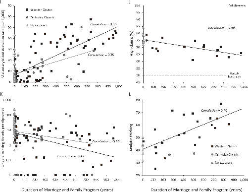

The duration of exposure to the Orthodox Church reveals some similar patterns, but its effects are generally muted compared to those of the Western Church. In some cases, we lacked any data from countries exposed to the Orthodox Church—so you’ll see only data points for the Western Church and one corresponding line in Figure 6.15. In other cases, for tightness and analytical thinking, we had a few data points and plotted them, but the lines shouldn’t be taken too seriously, because they’re based on so little data. The most complete data can be found in Figures 6.15I and 6.15K, for blood donations and unpaid parking tickets. In these cases, Orthodox Church exposure has effects like those of the Western Church, only weaker. The difference between the Orthodox and Western Churches is important, because it shows that psychological variation, and later economic and political differences, aren’t due to something about exposure to Roman institutions or Christianity per se. The Orthodox Church remained the official church of the Roman Empire (Eastern) until 1453 CE and promoted supernatural beliefs and rituals that were very similar to those of the Western Church. These findings support the idea that the key difference in the long-term impact of the Western vs. Orthodox Churches lies in policies about, and implementation of, marriage and family practices, especially those related to incest taboos.
My goal in this chapter has been to convince you that the broad patterns of global psychological variation are consistent with a causal pathway that goes like this:
Given the roughness of our data, the strength of the relationships between so many aspects of psychology and both kinship intensity and MFP dosages is striking. Of course, it’s always possible that the global psychological variation we’ve seen is caused by some other hidden factor that just happens to parallel the pathway that I’ve now highlighted. In the next chapter, I’m going to provide good evidence against this.
Nevertheless, it’s worth underlining that for each aspect of psychology discussed above, whenever we had enough data, both Benjamin Enke and our team did dozens of supplementary analyses in which we sought to statistically account for the influence of an immense range of other factors that might somehow have created the relationships we’ve seen throughout this chapter. Collectively, we looked at agricultural fertility, ruggedness, religiosity, distance from the equator, navigable waterways, parasite stress, malaria, irrigation potential, and European colonization. We also isolated the psychological variation among countries on the same continent and only compared countries with the same dominant religious denominations. Under this analytical onslaught, the relationships I’ve shown you above mostly hold up, although often they get a bit weaker. Occasionally, the relationships do vanish, but there’s no pattern to this—it’s not that religiosity or agricultural fertility consistently overpowers either kinship intensity or MFP dosages. Taken together, our analyses strongly suggest that there’s no lightning-bolt factor out there that demolishes these findings and illuminates an alternative pathway to account for global psychological variation. The problem is that, while comparing countries is a convenient way to illuminate the broad patterns of global variation, it’s not a great way to unearth “what causes what,” because too many factors remain hidden. In the next chapter, we’ll dig deeper to uncover the pathway more clearly.
Before grabbing our spades, however, let’s pause and step back. Taking them at face value, the analyses I’ve laid out above give us some sense of how the Church might have altered people’s psychology in regions of Europe by the High Middle Ages (1000–1250 CE). By this time, some European communities had already experienced nearly five centuries of the MFP. By 1500, a time considered the dawn of the modern world, some regions had experienced the MFP for nearly a full millennium. The psychological changes induced by the shift in the organization of families and social networks help us understand why the newly forming institutions and organizations developed in certain ways. New monastic orders, guilds, towns, and universities increasingly built their laws, principles, norms, and rules in ways that focused on the individual, often endowing each member with abstract rights, privileges, obligations, and duties to the organization. To thrive, these voluntary organizations had to attract mobile individuals and then cultivate an adherence to, and preferably an internalization of, their mutually agreed upon principles and rules. With intensive kinship in a straitjacket, the one thing that medieval Europeans had in common was Christianity, with its universalizing morality, sense of individual responsibility, and strong notions of free will. From this peculiar soil, an impersonal suite of social norms germinated and gradually began to spread.